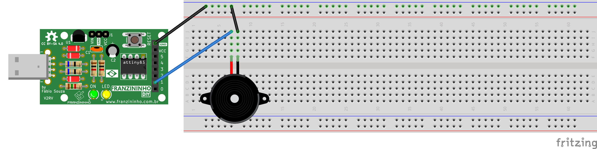

Instrumento musical com Buzzer
Introdução
Nesse exemplo vamos criar um programa que lê uma partitura e toca a música escrita através de um buzzer na Franzininho DIY. Vamos aprender como se usar um buzzer passivo para gerar cada nota musical com ajuda do timer0.
Boa prática!
Recursos necessários
- Franzininho DIY (com Micronucleos)
- 1 buzzer passivo 5v
- 4 jumpers macho-fêmea
- 1 jumper macho-macho
Fazendo música com o Buzzer
Nesse exemplo vamos através de uma lookup table vamos ensinar quais as frequências de cada nota, e com o uso do timer vamos variar a entrada no buzzer na frequência da nota que queremos. Com a ajuda de outra tabela, vamos dar para o Franzininho a sequência das notas que queremos que ele toque, podendo assim, tocar a música que quisermos.
O buzzer passivo funciona como um pequeno alto falante, enquanto tivermos a tensão nominal na entrada positiva e o terra na entrada negativa o imã dentro dele vai para frente. Por outro lado, quando tivermos terra em ambas ele volta para a posição inicial. Se variarmos entre esses dois estados na frequência de uma nota musical geraremos uma onda sonora com o tom dela.
As notas musicais ocidentais em uma escala maior são Do Do# Re Re# Mi Fa Fa# Sol Sol# Lá Lá# Si voltando para Do depois. Cada nota está a uma distância de meio tom da outra e a 6 tons de sua próxima oitava, que é a mesma nota porém mais fina.
Olhando pela frequência temos que partindo de Lá da terceira oitava, 440Hz, cada Lá uma oitava acima tem o dobro da frequência e cada oitava a baixo tem metade da frequência. Já para subir cada semitom, basta multiplicar por 2^(1/12), ou para x semitons, 2^(x/12).
Código
/***********************************************
*
* @file main.c
* @author Eduardo Dueñas / Daniel Quadros
* @brief Exemplo tocar musicas usando buzzer
* @version 1.0
* @date 21/04/2021
*
* última modificação: 15/05/2021
*
**********************************************/
#include <avr/io.h>
#include <avr/interrupt.h>
#define F_CPU 16500000L
#define setBit(valor,bit) (valor |= (1<<bit))
#define clearBit(valor,bit) (valor &= ~(1<<bit))
#define toogleBit(valor,bit) (valor ^= (1<<bit))
#define testBit(valor,bit) (valor & (1<<bit))
#define NumNotas 32
#define CONT(freq) ((F_CPU*10L)/(256L*freq))
enum notas{Pausa,Do, DoS, Re, ReS, Mi, Fa, FaS, Sol, SolS, La, LaS, Si, DoM, DoSM, ReM};
long f[16] = { 255L, (long)CONT(5232L), (long)CONT(5543L), (long)CONT(5873L), (long)CONT(6222L), (long)CONT(6592L), (long)CONT(6984L),
(long)CONT(7400L), (long)CONT(7840L), (long)CONT(8306L), (long)CONT(8800L), (long)CONT(9323L), (long)CONT(9877L),
(long)CONT(10465L), (long)CONT(11087L), (long)CONT(11746L)};
//{0xFF,123, 116, 110, 104, 98, 92, 87, 82, 78, 73, 69, 65, 62, 58, 54}
//Lookup table com os valores de cada nota a ser colocado na flag do timer
char Partitura[NumNotas] = {Re,Mi,Mi,Re,Sol,FaS,FaS,FaS,Re,Mi,Mi,Re,La,Sol,Sol,Sol,Re,ReM,ReM,Si,Sol,FaS,FaS,Mi,
DoM,Si,Si,Sol,La,Sol,Sol,Sol}; //partitura da música
volatile char cont = 0; //local da partitura
volatile long aux = 0;
//tratamento de interrupção
ISR (TIM0_COMPB_vect){ //vetor de comparação B
if (aux<=0xff) { //se aux menor que 8bits
OCR0B=(TCNT0+aux)&(0xff); //mandar aux para o contador
aux=f[Partitura[cont]]; //reinicia o aux
toogleBit(PORTB,PB1); //inverter o buzzer
}
else{ //se não
OCR0B=TCNT0; //mandar o tempoatual para o contador, o mesmo que esperar um overflow
aux-=0xff; //subitrair 8bits do aux
}
}
//função main
int main(){
enum notas nota;
setBit(DDRB,PB1); //configura o PortB1 como saida, pino do buzzer
//configuração do timer
TCCR0A=0x00; //configura pino de compararação desconectado
TCCR0B=0x04; //configura o prescaler como 256
setBit(TIMSK,OCIE0B); //habilita a interrupção por comparação de COMPB
sei(); //habilita interrupções globais
aux=f[Partitura[cont]]; //inicia o contador de COMPB
if (aux<=0xff) {
OCR0B=(TCNT0+aux)&(0xff);
aux=f[Partitura[cont]];
toogleBit(PORTB,PB1);
}
else{
OCR0B=TCNT0;
aux-=0xff;
}
//loop infinito
for(;;){
long i;
for(i=0;i<1000000L;i++){
asm ("nop");
//long j;
//for(j=0;j<1;j++){asm ("nop");}
cont++; //avança na partitura
if (cont >= NumNotas)cont=0; //toca de novo
}
}
Montagem

Dependendo do buzzer é necessário conectar os jumpers diretamente nos pinos do buzzer ao invés de colocá-lo na protoboard.
Compilação e upload
Para compilar o programa, acesse a pasta do exemplo e dê o comando make:
exemplos-avr-libc/exemplos/buzzer$ make
Como já temos o makerfile configurado na pasta, será feita compilação e deve aparecer a seguinte mensagem:
../../micronucleus/2.0a4/launcher -cdigispark --timeout 60 -Uflash:w:main.hex:i
Running Digispark Uploader...
Plug in device now... (will timeout in 60 seconds)
> Please plug in the device (will time out in 60 seconds) ...
Conecte a placa em uma entrada USB ou, caso a Franzininho já esteja conectada, aperte o botão de reset para iniciar o upload.
Resultado
O buzzer deve tocar Parabéns para você e deve continuar em loop até a placa ser desligada.
Conclusão
O buzzer passivo é um componente muito versátil com o qual podemos, não só, tocar músicas como também gerar diversos tipos de efeitos sonoros, tudo que precisamos é entender como gerar o som que queremos. Além disso vimos como podemos usar interrupções de timer para funções que precisam de Real Time, ou seja, que precisam de precisão de tempo.
Glossário
- Setar: colocar um novo valor em um registrador. Para um bit é convencionado setar, mudá-lo para valor 1, e clear (limpar), mudá-lo para valor 0
- Resetar: reiniciar
- Timer: circuito eletrônico dedicado a contagem de tempo
- Lookup table: tabela de consulta, no contexto de programação é um vetor com informações necessárias para o programa.
| Autor | Eduardo Dueñas |
|---|---|
| Data: | 05/06/2020 |